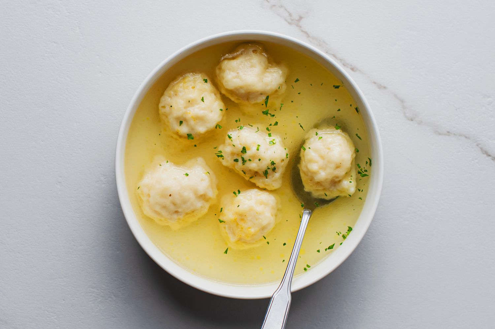

Dumpling Soup

What is Dumpling Soup?
Dumpling soup is a soup made from a seasoned broth combined with
dumplings and other optional additions. This recipe will use
frozen dumplings and celery as the main ingredients.
Ingredients
- Water
- Celery
- Frozen Pre-Cooked Dumplings
- Salt
- Black Pepper (optional)
- Garlic Powder (optional)
How to Prepare
- Bring salted water in a pot to a boil
- Add handful of fresh or frozen chopped celery to boiling water
- Add desired amount of dumplings to boiling water
- Stir soup repeatedly until celery is visibly soft
- Serve soup and add garlic powder and/or black pepper to taste if desired